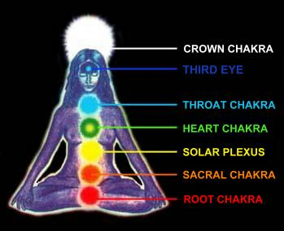
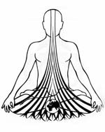
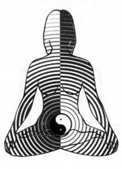
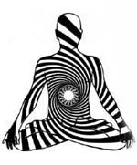
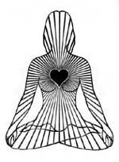
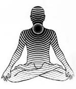
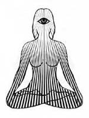
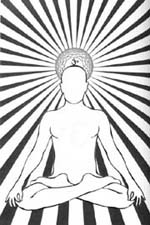
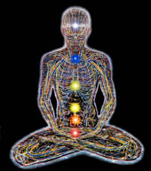

ROOT chakra

Color: Fiery RedElement: Earth
Sense: Smell
Fundamental Principle: Physical will of being as opposed to spiritual will of being (that of the 7th chakra)
Body Association: Spinal column, bones, teeth, nails, anus, rectum, colon, prostate gland, blood, and the building of cells
Glands: Suprarenal glands (which produce adrenalin and influence the temperature balance of the body)
PURPOSE AND FUNCTION
The 1st chakra (Root Chakra) is located between the anus and the genitals. It is connected with the coccyx and opens downward. It connects us to the physical world and lets the earthly energy enter our system. When it is open, we fully accept life on earth and enjoy the physical existence it provides. We act in harmony with the earthly forces and we learn from them. It also provides us with the necessary energy for creative self-expression and lends us the power to achieve. Our sexuality as a physical function and a means of begetting children also reign in the Root Chakra.
The Root Chakra is the source of the life force and forms the vital foundation for all the higher chakras. Here, the inexhaustible supply of kundalini energy is awakened. The sushumna, ida and pingala (the three main energy channels of the human body) begin in this chakra.
The Root Chakra is the true seat of the collective unconscious. Through this chakra, the stored knowledge of the collective unconscious becomes accessible. This chakra should always function in harmony with the seventh chakra in order to maintain our inner balance.
HARMONIOUS FUNCTIONING
If your Root Chakra is open and functioning harmoniously, you will experience a deep, personal relationship with Earth and earthly life forms (Nature). You are rooted in life and your life is filled with satisfaction, stability and inner strength. Your actions are guided by the desire to be creatively active in shaping life on planet Earth. You perceive the earth as a shelter and secure place. It provides you with all your physical, psychological and emotional needs. You are truly grateful for life on earth.
If your Root Chakra is unbalanced or malfunctioning, your thoughts and actions primarily revolve around material possessions and security, as well as your over indulgence in sensual pleasures such as, good (exotic) foods, alcohol, sex, etc. You want your desires to manifest without consideration of the consequences. Your inability to let go of these tendencies often manifest themselves in the form of constipation and gaining weight, as in overweight.
Your actions revolve around satisfying your personal needs and you unconsciously overlook or ignore the needs of others as well as your own (ie. good health, sufficient rest and a balanced and harmonious life.) In the extreme, if you are challenged by people or situations, you become easily irritated, upset, aggressive, and you may have a tendency to violently enforce your will upon others. These feelings of rage, anger and violence are actually a defense mechanism which indicate a lack of trust -- it's a fear of losing that which provides you with security and a feeling of well-being, or your inability to gain it in the first place.
If your Root Chakra is blocked or closed, you will lack physical and emotional stamina. A lot of things in life worry you. You are filled with feelings of uncertainty. You lack the power to achieve. Often, you see life on earth as a burden. For you, life on earth is NOT a pleasure. Most of the time you long for an easier, more pleasant and less strenuous way of life.
If you have developed your higher chakras and neglected your lower ones, you may feel that you don't belong on the earth. If your Sacral (2nd) Chakra and your Solar Plexus (3rd) Chakra are also blocked, anorexia may result.
Click Here to Study Your other Chakras
SACRAL chakra

Color: OrangeElement: Water and all biological life
Sense: Taste
Fundamental Principle: Creative reproduction of being
Body Association: Pelvic girdle, kidneys, bladder, and all liquids, such as, blood, lymph, gastric juice, sperm and regulation of the
female cycleGlands: Prostate, gonads, ovaries, testicles
The 2nd chakra (Sacral Chakra) is located above the genitals. It is connected with the sacrum and opens towards the front. We fertilize and receive the energies that permeate all of nature through the Sacral Chakra. The male reproductive organs as well as the impulse to procreate new life is influenced by this chakra.
Water cleanses and purifies. It dissolves and washes away the blockages that obstruct its vital flow. Albeit the kidneys and bladder accomplish this on the physical plane, on the spiritual plane the cleansing and purification process manifests itself in the form of free-flowing feelings. We look at life as something primordial and new, and our interpersonal relationships with the opposite sex are particularly influenced by the condition of the Sacral Chakra.
An open and harmoniously functioning Sacral Chakra allows you to open yourself towards others, especially the opposite sex. Your sexual union with your lover (partner) blossoms into the dance of creation. You feel the flow of the male and female energies streaming through your body, soul and mind.
The Sacral Chakra comes alive during puberty. This is when a malfunctioning Sacral Chakra often originates. The awakening of sexual energies cause a state of uncertainty within you. Parents and educators rarely teach people how to handle these energies. During your early infancy, there may have been a lack of tenderness and bodily contact, which may later lead to the rejection of sexuality. As a result, you are unable to experience the uninhibited expression of your creative sexual potential and these uninhibited energies may express themselves in the form of excessive sexual fantasies or suppressed desires. You may also see sex as a drug. What you need to understand is that your creative sexuality has just been misdirected. These actions breed uncertainty and sexual tension between the sexes.
In most cases, inadequate functioning of the Sacral Chakra can be traced back to childhood and infancy. Your parents probably withheld their own sensuality and sexuality. Additionally, you probably had a lack of sensual stimulation in the form of touching, caresses, tenderness and affection. Consequently, you suppressed your feelings and withdrew your antennas, so to speak, turning off these sensual messages. Then, during puberty, you may have blocked off your developing sexual energies completely. This suppression results in a lack of self-esteem, emotional paralysis and sexual coldness. Life in this light seems dreary and you may feel life is not worth living. These feelings often amplify teenagers' tendencies to commit suicide
Click Here to Study Your other Chakras
SOLAR PLEXUS chakra

Color: Yellow - GoldenElement: Fire
Sense: Sight
Fundamental Principle: Shaping of things
Body Association: Lower back, abdomen, digestive system, stomach, liver, spleen, gallbladder, autonomic nervous system
Glands: Pancreas, which plays an important role in the digestion
of food and the secretion of insulin
The 3rd chakra (Solar Plexus Chakra) is located about two fingerbreaths above the navel and opens towards the front. Its functions are highly complex. It represents our sun and our power center. We absorb the solar energy through the Solar Plexus, which nurtures our ethereal body, energizing and maintaining our physical body. Also, our emotional energy radiates from here.
The foundation of our personality is represented through the Solar Plexus Chakra. Our social indentity and our desire to confirm it by personal assertion, our will to achieve, our striving for power, and our adaptation to social patterns all are influenced by the Solar Plexus Chakra.
The most important task of the Solar Plexus Chakra is to purify the desires and wishes of the lower chakras (Sacral and Root). To consciously control and use the creative energy of these lower chakras and allow the spiritual higher chakras to manifest in the material world is the greatest possible fulfillment.
The Solar Plexus is directly connected to our astral (emotional) body, which is the center of our wishes and desires. If we accept and integrate our feelings, wishes and experiences in our lives, this will help our Solar Plexus relax and open up, thus increasing our inner light and illuminating our situation in life.
Our moods are influenced by the amount of light we permit to shine within us. When the Solar Plexus Chakra is opened, we feel enlightened, full of joy, and an inner richness. If it is blocked, closed or disturbed, we feel gloomy and unbalanced, etc. It is important to note that we also PROJECT the same moods and sensations into the world (environment) around us. Life therefore may seem either bright or dark to us. It is the amount of light within us that determines the clearness of our vision and the quality of what we see.
We also directly perceive the vibrations of other people through the Solar Plexus and react accordingly. If we are confronted with negative vibrations, this chakra warns us. You've heard the saying, "I've got a gut feeling." This is your Solar Plexus talking to you.
You feel peace and an inner harmony with your Self, life in general, and your place in the world. You have accepted yourself completely, and you respect the feelings and character traits of others. You also accept your feelings, wishes and experiences in life. You see them in the "right light." Your feelings, wishes and experiences are integrated in such a way that lead to wholeness of being.
As an additional bonus, if your Third Eye Chakra (6th chakra) and your Crown Chakra (7th chakra) are also open, you can recognize that all visible matter consists of varying degrees of light vibrations. Since all visible matter is light, when these chakras are functioning in harmony with each other, your wishes are fulfilled spontaneously. You are connected to the energy of light in all things, and therefore, you attract everything you are in search of to yourself.
When your Solar Plexus Chakra is malfunctioning, you want to manipulate everything in accordance with your own wishes and desires; you want to control your inner and outer worlds and conquer and exercise power. An inner restlessness and discontent drives you. You develop an enormous urge to keep active and busy. This urge is your way of covering up your persistent feelings of inadequacy and shortcomings. You just can't let go and relax. You need to understand that material wealth and recognition cannot provide you with true, long-term happiness.
Acceptance and material well-being are of primary importance for you. Your true emotions are all blocked, therefore, you are unable to express them. You get upset easily. Your irritation and agitation are an expression of all the anger you have swallowed over a long period of time. You feel dejected and discouraged. You see obstacles everywhere. You believe these obstacles are preventing you from fulfilling your desires. When faced with a difficult situation, you may feel queasy and uncertain, or you may get so nervous your actions become haphazard and disorganized. You want to hide from and avoid all new challenges in life. Your perception of life is not good. You see unhappy endings everywhere you turn.
Click Here to Study Your other Chakras
HEART chakra

Color: Green, Pink, and sometimes GoldElement: Air
Sense: Touch
Fundamental Principle: Devotion, self-abandonment
Body Association: Heart, upper back, thorax and thoracic cavity, lower lungs, the blood and circulatory system and the skin
Gland: Thymus, which regulates and controls the lymphatic system
The 4th chakra (Heart Chakra) is located in the center of the breast at the height of your heart and opens toward the front. It is the center of the entire chakra system and connects the LOWER (Physical & Emotional Centers) to the three HIGHER (Mental & Spiritual Centers.)
The Heart Chakra is a very important chakra. With the Heart Chakra we find the capability to empathize and sympathize with others. We attune ourselves with the cosmic vibrations and perceive the beauty in nature, music, visual arts and poetry. Here, all images, words and sounds are transformed into feelings.
All yearning for deep intimate contact, oneness, harmony, love, even sorrow, pain, fear of separation or loss of love is expressed through the Heart Chakra. When completely opened, it forms the center of true "unconditional" love.
When this "unconditional" love is connected with the higher chakras, it transforms itself into Bhakti, the Divine Love, which guides us to unity with this Divine Heart of all things in the universe. Enroute toward this goal, our heart must learn to love, understand and accept ourselves (personality) which is the prerequisite to saying "yes" to others and life in general. All our experiences, wishes and emotions have a much deeper sense and purpose, which guide us to a loving acceptance that all feelings and expressions of life originate from the longing for love.
With every negation and rejection, we regenerate separation and negativity, whereas a positive and loving acceptance (a conscious "yes") produces vibrations which neutralize (kill, so to speak) negative thoughts and feelings. Simply put, you can neutralize those intense feelings of grief, anger or despair with your loving, unbiased and undivided attention -- positive thoughts and feelings.
With our Heart Chakra, we possess a great potential for healing others as well as ourselves. If you suffer from pain or illness, send the afflicted organ or area of your body your loving attention and it will help and accelerate the recuperation period enormously. If we can learn to love from the depths of our own heart and fully accept our entire personality, an opened Heart Chakra can have a spontaneous healing or transforming influence on ourselves and others.
The Heart Chakra radiates colors of green, pink, and sometimes gold. Green is the color of healing and sympathy and harmony. If an enlightened person (ie. someone who can see human auras) perceives a clear, light-green in a person's heart chakra, this would indicate a well-developed capability to heal, while a golden aura mixed with pink would show a person who lives in pure and selfless love of the Divine.
Within the Heart Chakra is the deepest and most vivid feelings of love. It also plays an important role in refining the perception of an open Third Eye, and it is for this reason that the spiritual schools in the East concentrate particularly on the opening of the Heart Chakra.
Working in harmony with all the other chakras, a completely open Heart Chakra can change the world around you and unite, reconcile, or even heal the person within your surroundings. Your entire being radiates natural warmth, sincerity and happiness. These wondrous energies open the hearts of the people around you, inspiring confidence and creating joy among them. A great compassion and willingness to help others comes perfectly natural to you.
You love for love's sake. You are motivated by the joy of giving and do not expect to gain anything in return. Your heart is in everything you do. You "unconditionally" love all!
Through this wisdom, you view the world and personal experiences in a new light. You no longer look at life from a distance and think that it has nothing to do with you. You see all life as part of your own life and that "life" in its purest and most original form really signifies an everlasting expression of Divine Love and bliss.
All is love!
A malfunctioning Heart Chakra may express itself in various ways. You may want to always be there for others and give freely, but consciously, you may want/expect recognition in return for all the love you give them. Then, if your efforts are not sufficiently appreciated, you may feel deeply disappointed.
You may also feel that you are strong and powerful enough to give away some of your stength but incapable of accepting the love that others may want to give you. In this way, you are unable to open yourself to receiving the love of others. Emotions aligned with tenderness and softness probably embarrass you and make you feel weak, vulnerable to injury and dependent upon the love and affection of others.
You are deeply hurt by rejection, especially after you gathered the courage to open yourself up. When this happens, you feel like withdrawing into your inner shell. You are sad and depressed. You want to give your love but your fear of being rejected makes it impossible. You feel you don't know how to love, thus reinforcing your shortcomings and inability.
You may compensate for your lack of love by adopting an extremely friendly personality, treating people equally in an impersonal manner without genuine involvement. When your heart is called for, you may evade the situation and shut yourself off because you are afraid of possible injury. If your Heart Chakra is completely closed, you will express coldness, indifference or even "heartlessness." You are completely out of balance and suffer from depression. Sadly, unhappiness is a way of life for you.
Click Here to Study Your other Chakras
THROAT chakra

Color: Pale blue, greenish-blueElement: Ether
Sense: Hearing
Fundamental Principle: Resonance of being
Body Association: Neck, throat, jaw, ears, voice, trachea, brochial tubes, upper lungs, esophagus and arms
Gland: Thyroid, which regulates the transformation of food into
energy via our metabolism. It also controls the iodine
metabolism and the balance of calcium in our blood and tissue.
The 5th chakra (Throat Chakra) is located between the depression in the neck and the larynx, beginning at the cervical vertebra. It starts at the cervical vertebra and opens towards the front. It is also connected to a small secondary chakra which has its seat in the neck (and opens to the back.) Since the two chakras are so closely related, they have been integrated as one.
The Throat Chakra is the center of the human capacity of expression, communication and inspiration and is connected to a smaller secondary chakra, which has its seat in the neck and opens to the back. Since they are so closely linked, they are integrated together as the Throat Chakra.
As an important link between the lower chakras and the Crown Chakra, the Throat Chakra serves as a bridge between our thoughts and feeling, impulses and reactions. Here we express our laughter, crying, feelings of love and happiness, anxiety, aggressiveness, intentions, desires, as well as our ideas, knowledge and perceptions of the inner worlds.
The Throat Chakra enables us to reflect on our thoughts and actions. The more we develop the Throat Chakra, the more aware we are of our mental body and our ability to distinguish between our mental and emotional, ethereal and physical bodies. As a result, our thoughts are no longer dominated by our feelings and physical sensations.
Ether is regarded in Yoga teaching as the basic element which forms the lower chakras -- earth, water, fire and air. The light blue color of ether is the medium of the spoken word and the communicating element of information. If we are calm and listen to our inner and outer space, we will be granted the deepest level of knowledge, known as the Akasha (the astral light where all the events, thoughts and feelings that have occurred since the beginning of time are recorded.)
We communicate our inner life through the spoken word, as well as through gestures and creative forms of expression (ie. music, the performing arts, dancing, etc.) The Sacral Chakra and the Throat Chakra link with the energies of the other chakras into an etheric form which is communicated to the outside world.
Since we can only express that which we find in ourselves, we need to distance ourselves in order to reflect on our thoughts and actions. The Throat Chakra enables us this certain distance. In other words, we need to develop the Throat Chakra in order to become more conscious of our mental body and distinguish between the factors of the mental, emotional, ethereal and physical bodies. In this way our thoughts are no longer dominated by feelings and physical sensations.
Hearing is also assigned to the Throat Chakra. Open your ears and listen to the voices of Creation. Here we also hear our inner voice and communicate with our inner spirit and receive inspiration.
When the Throat Chakra is completely open, your feelings, thoughts and inner knowledge are expressed freely and without fear. You express your inner honesty towards yourself and others by your upright posture.
You possess the ability to fully express yourself with your entire personality, and at the same time, you remain silent and listen to others with all your heart and understanding. Your speech is imaginative and colorful and perfectly clear, and your voice is full and melodious. When faced with difficulties and resistance you are able to say "no" -- if that is what you truly mean.
You are not swayed or manipulated by people's opinions. You maintain your independence, freedom and self-determination. You have no prejudices. You are open and aware of the reality of the subtle dimensions from which you receive the guidance of your inner voice. You trust yourself in the hands of this guidance. You possess the capability to communicate directly with life of all spheres of existence, and where applicable, you pass the knowledge you have gained onto others without fearing their reactions and opinions.
If the energies in your Throat Chakra are blocked or closed, then the communciation link between your mind and body will be blocked -- Either you find it difficult to reflect upon your feelings and you express your unresolved emotions in thoughtless actions, or, you may hide inside your intellect and deny your emotions a right to live and be heard.
The only feelings you permit are those which you have self-judged and that do not contradict the judgement of the people around you. You have an unconscious feeling of guilt and your own inherent fears prevent you from seeing and showing your true Self. You cannot express your deepest thoughts and feelings freely.
Your language may be noisy, unpleasant and offensive, or cold, indifferent and business-like. You may stutter. Your voice is loud but your words lack depth of meaning. You try to appear strong; you do not permit yourself to show any weakness; and you probably place yourself under a lot of pressure.
You use your excessive expressive capabilities to manipulate others or to attract attention to yourself. Although you may possess deep, inner knowledge, you are afraid to live and/or express it because you fear judgement from others. In order to release this deep knowledge, you may express it in the form of poems, paintings or other forms of similar expression, then reluctantly, openly share it with others.
You cannot show and express yourself well, if at all. You withdraw your inner Self completely. You are shy, quiet, withdrawn, and when you talk, you talk about trivial matters.
You quickly get a lump in your throat if you try to express your deeper thoughts and feelings. Your voice sounds forced. When this happens, you may stutter. You feel uncertain. You are afraid of the judgement of others. You are out of touch with your soul, therefore, you do not trust your intuitive powers.
If you do not develop your Throat Chakra, you will find yourself imprisoned in a small restrictive space surrounded by your own self-built walls.
Your insecurities dominate your life.
Click Here to Study Your other Chakras
6th - 3rd Eye? chakra

Color: Indigo, yellow, yellow-green or violetSense: Sight, sound, smell, taste and touch, also extrasensory perception
Fundamental Principle: Knowledge of being
Body Association: Face, eyes, ears, nose, sinuses, cerebellum, and
central nervous systemGland: Pituitary. It is sometimes referred to as the "master gland."
It is like the conductor of an archestra -- Its secretional
activities control the function of the other glands.
The 6th chakra (Third Eye) is located a fingerbreath above the bridge of the nose in the center of the forehead and opens to the front. The Third Eye Chakra is also associated with the pituitary gland. Here, conscious perception of being takes place. It is the seat of our higher mental powers. On the physical plane, it is the highest center of command for the central nervous system.
Although indigo blue is normally associated with the Third Eye Chakra, yellow, yellow-green and violet can also be seen under meditation. These colors indicate different functions at different levels of consciousness. For exampre, rational or intellectual thought may produce yellow radiation; intuition and holistic cognition, a clear, dark-blue; and extrasensory perception, shades of violet.
Every realization in our lives begins with a thought and a projected image. By our mental powers, we are connected with the process of manifestation via the Third Eye. It is important to understand that all knowledge manifested in Creation already exists. This knowledge is all contained in the pure Being in the same way a seed contains all the information of the finished plant. In Quantum physics, this is also known as the "standardized field."
The shapelessness Being manifests first a pattern of vibration. Then, from this first vibration, each step in the development of awareness creates a new and differentiated pattern of vibration.
From the pure ethereal being to the denseness of matter, all levels of creation are contained in human life. These levels of creation are represented in the chakras with their various levels of vibration; thus, the process of manifestation takes place within and through us.
The Third Eye is the seat of consciousness attainment. Herein we can manifest matter and dematerialize it. We can create new realities and dissolve old ones. For the most part, this is an automatic process that takes place without any conscious action on our part.
Most of our decisive thoughts are controlled by unresolved emotional patterns, which are programmed by our opinions and prejudices and those of others. As a result, our MIND is often NOT the Master but the Servant of our emotional thoughts.
By developing our consciousness and Third Eye Chakra, we can control our lives. Our imagination can create the energy necessary for the fulfillment of our wishes. And, when IN CONJUNCTION WITH an open Heart Chakra, we can send out healing energies to those close at hand and far away.
At the same time, we can gain access to all levels of creation beyond the physical reality. This knowledge manifests itself in the form of INTUITION, CLAIRVOYANCE, or the HYPERSENSITIVITY of hearing or feeling. Things that were vaguely suspected before are now perceived very clearly.
Very few people today have a completely open Third Eye without an advanced state of consciousness. The Third Eye Chakra needs to be DEVELOPED! However, there are telltale signs of a harmonious functioning Third Eye, such as, an active mind and advanced intellectual skills (ie. a compelling holistic pursuit of scientific research, or the recognition of far-reaching philosophical truths may be a sign of a partially open and harmoniously functioning Third Eye.)
You possess a well-developed ability of visualization and comprehension of things intuitively. You are receptive to mystic truths. You realize more and more that the world is but an allegory, a spiritual principle that has manifested itself on the physical level. From time to time, you notice that your thoughts or ideas have come true.
If you develop your Third Eye completely, you will perceive the world in a new light. Your thinking will be holographic. You will perceive and spontaneously integrate the information from different spheres of creation into your growing capability of all-consciousness/awareness.
The material world will become transparent to you. Your conscious is a mirror for the Divine, and the material world a mirror for the energy that exist on all levels of being.
Your extrasensory perception is so clear you directly perceive the energies at work beneath the surface of the physical world, and you realize that you can consciously control these energies AND create your own forms of manifestation!
Your intuition and inner sight will open the doors to all the subtle planes/dimensions of reality, which consist of an endless number of worlds between the physical (materialistic) planes of creation and pure Being. And you will realize that these other worlds/dimensions are inhabited by a wide variety of life forms.
You are what is considered, "top-heavy." You live completely in the realm of your mental sphere. Your life is determined almost exclusively by reason and intellect. All aspects of your life are organized in an intellectual manner; therefore, you can only perceive with your rational mind. Although your intellectual skills may be very sharp and well developed, and you may have a keen analytical ability, you lack a holistic way of seeing things.
You can easily fall prey to intellectual arrogance. You accept only those things that your mind can comprehend and that can be demonstrated and proven by scientific analysis. You perceive spiritual insight as unscientific and unrealistic and reject them outright.
You may attempt to influence others or events by intellectual force to demonstrate your power, satisfy your personal needs, and/or feed your ego. In this case, your Solar Plexus Chakra is usually out of balance and your Heart and Crown Chakra are only developed to a slight degree. All the Chakras play a part in the whole Being!
Your life is dominated by materialistic desires and physical needs without emotional consideration. You find spiritual reflection and discussion a strain and waste of time. You view spiritual truths as senseless dreaming without any practical use. Your thoughts are strictly aligned with the conventional lines of societal thought.
You easily lose your temper in demanding situations. You are also probably very forgetful. In extreme cases, your thinking will be muddled and confused and completely determined by unresolved emotional patterns. You are blind, deaf and dumb to the spiritual realms of sight, sound and speech. The only reality you see, hear, speak and accept is the physical, external, visible world.
In the grand scale of Life, your world is very small.
Click Here to Study Your other Chakras
CROWN - 3rd Eye chakra

Color: Violet, also whiteFundamental Principle: Purest being
Body Association: Cerebrum
Gland: Pineal*
* Science has not conclusively determined the physical influence this gland has on the human body.
: - )
The 7th chakra (Crown Chakra) is located at the middle of the head and opens upward. The Crown Chakra is also associated with the pineal gland, which is located in the middle of the head between the ears. The Crown Chakra is often represented in religious paintings as a halo above the head. It's predominant color is violet, but it glows in all the colors of the rainbow.
The Crown Chakra unites in itself all the energies of the lower chakra centers. It is the source of energy for all the other chakras.
Here we started our journey into life, and at the end of our development, this is where we will return. Here we live and experience UNITY with the primordial Divine principle and where our personal energy field becomes ONE with the universe.
The awareness the Crown Chakra gives us dwarfs the knowledge the Third Eye Chakra conveys. We now completely comprehend our intellectual and intuitive understanding. We experience our bodies as an expression of Creation as the divine consciousness of which we have become a part.
The color violet is associated with the unfolding of the Crown Chakra. It is the color of meditation and devotion. Albeit we can consciously influence the activation of all our lower chakras, with the Crown Chakra all we can do is open ourselves up to its influence and allow things to happen through us.
With the unfolding of the Crown Chakra, any blockages that may remain in the lower six chakras dissolve and their energies will begin to vibrate at their highest possible frequencies, each chakra working at its own level as a mirror of the Divine Being.
When the Crown Chakra is completely awakened, it ceases to absorb the cosmic energies and starts to radiate its own energy. A lotus blossom blossoms out, so to speak, and forms a crown of pure white light on and above the head. This same energy is portrayed in the artistic paintings of Jesus the Christ as a crown of white light radiating from the top of his head.
HARMONIOUS FUNCTIONING
The Crown Chakra can only be developed to a greater or lesser extent; Your development with the other six chakras determines the degree. There are no blockages as such in the Crown Chakra. When the Crown Chakra begins to open, your consciousness will become completely calm and open. You will experience your real Self and realize that your Self is part of the omnipresent pure Being which is contained in all matter. As you develop your Crown Chakra, these moments will occur more frequently.
When your Self is ready for this final step of enlightenment, you will know. One day you will feel as if you have just awakened from a long dream of illusion, and for the first time you see the real reality of life. There is no turning back in your development now. You realize that what you have found is your true Self. Your individual ego has been transformed into a universal ego. If you want to know something, all you need to do is ask by directing your attention accordingly. Everything exists within you. You are ONE with the divine Being, and it is through this ONENESS that the ALL exists.
You now realize that matter is nothing but a form of thought in the Divine Consciousness and that it does not really "exists" as such. All that you thought was real up to this point you now perceive as an illusion.
Interestingly enough, you are open to the energies of the Crown Chakra every seven years. The seven year cycles are: ages 7, 14, 21, 28, 35, 42, 49, 56, 63, 70... During this period, you can develop a depth and insight and wholeness that you would have considered impossible before. Meditation and selfless devotion now provide you with insight into your Divine origin. This helps you experience a feeling of ONENESS. Use this opportunity to dwell more within yourself. Meditate. This is a seemingly magical time in your life.
It is also interesting to note that an infant's fontanel remains open for the first 9-24 months of its life, and it is during this particular period in their life when they live in an awareness (consciousness) of undivided unity.
CLOSED CROWN CHAKRA CHARACTERISTICS
Up to this point, we have been told how the opening and harmonization of all the chakras can provide us with a great deal of knowledge, experience and skills. But if we do not open the Crown Chakra, we will feel separated from abundance and wholeness. We will not be completely free from fear, and it is this fear that always maintains some remnants of blockages within the chakras, therefore, they are unable to unfold our chakras complete range of possibilities. Their individual energies will not vibrate in complete harmony with the "dance of creation," nor with each other.
You may experience feelings of uncertainty and a lack of purpose if you do not open yourself to spiritual truths during the years when your Crown Chakra can develop. You should interpret these feelings as a hint to look inside yourself more frequently. Additionally, you may become more conscious of a certain senselessness in your life, or the fear of death may visit you more frequently. You may control these feelings by escaping into excessive activity, keeping yourself busy, or you may burden yourself with new responsibilities. Quite often, people in this condition fall ill. If you ignore these profound messages, your life may become a life stuck in superficiality. As a consequence, you limit the potential of your Self to develop. In essence, opportunity lost.
Click Here to Study Your other Chakras
Please note:
The information contained in this site barely skims the surface of the subject. My purpose here is simply to reveal a basic understanding of the seven primary human chakra system.Furthermore, discussion of chakra blockages, chakra cleansing, activation (opening), chakra intonation and meditative breathing techniques have been omitted for brevity purposes. These subjects you will need to research and study on your own if you want your chakras to work for you. Now that you have a basic understanding of the Human Chakra System, it is my hope you will take the next step to work them.
This stuff is for real ! You CAN and SHOULD energize your chakras, strengthen them, awaken them so that they can work for you in health and well-being, after all, they are a part of your body. Think of your chakras like this: They are the invisible organs of your body; then ask yourself, how healthy are they?
The information contained within this site was derived from copious notes I have collected over the years from a variety of sources long forgotten, and the following texts:
Wisdom of the Mystic Masters by Joseph Weed
The Chakra Handbook by Shalila Sharamon and Bodo J. Baginski
The Chakras by C.W. Leadbeater
Eastern Body Western Mind by Anodea Judith
I hope you learned something of importance here.
Thank you for your visit:-)
